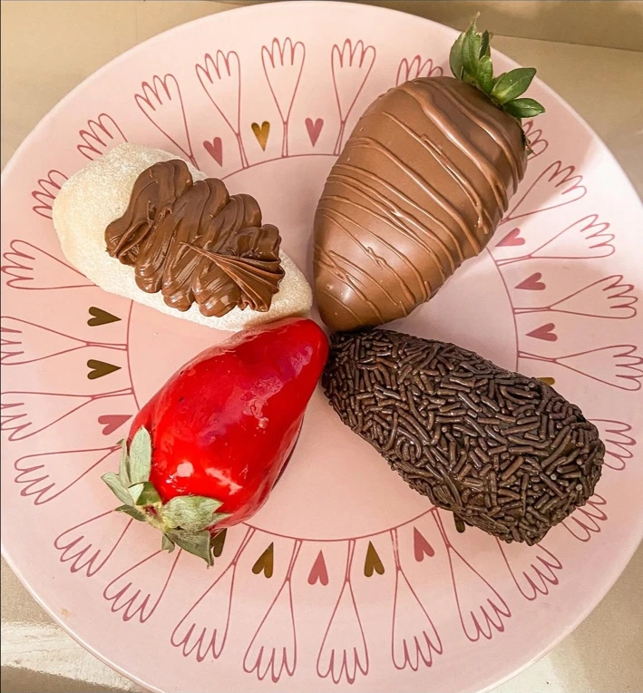
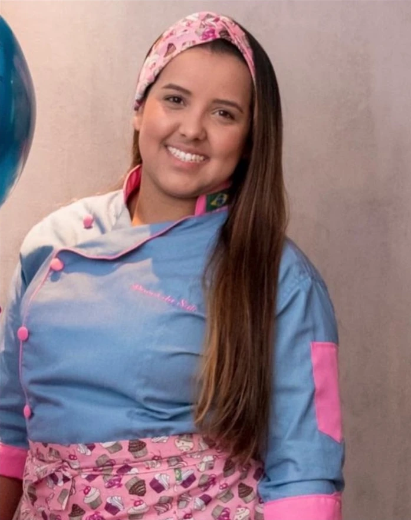
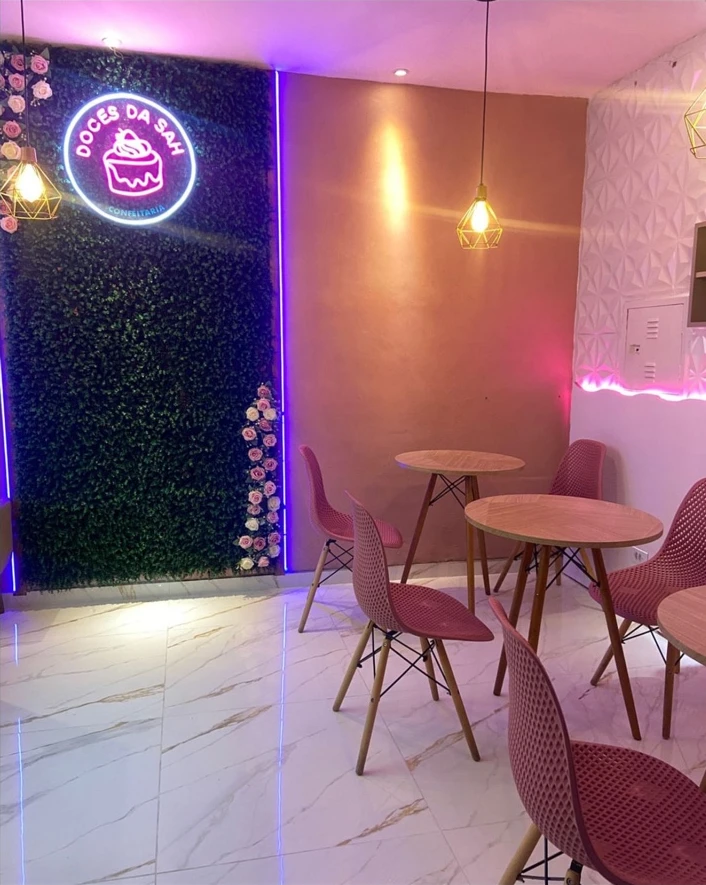

Para adoçar
o dia. E guardar
o momento.
Bolos e doces feitos para celebrar histórias, encontros e aquele desejo de um carinho em forma de sobremesa.
Confeitaria artesanal · Encomendas sob medida
Um doce. Um sorriso.
O carinho aparece
em cada detalhe.
Do doce para acompanhar o dia ao bolo de uma grande celebração. Conheça algumas das nossas criações.
Gostou de uma ideia? Converse com a Sah sobre sabores, tamanhos, valores e disponibilidade.

Prazer, Sah.O doce que transformou
um sonho em realidade.
Foi durante a pandemia, quando tudo fechou, que a história da Doces da Sah começou dentro de casa. Foi ali que nasceu o Copo Bombom: morango, creme de chocolate e leite Ninho, uma combinação que começou a conquistar muitos corações.
Cada copo vendido aproximava a família do sonho de ter a própria loja. À frente da confeitaria, Sarah levou esse carinho para novas criações e momentos especiais.
Na celebração dos seis anos da Doces da Sah, o Copo Bombom voltou: menorzinho no tamanho, mas gigante nessa história. Um doce que representa o começo de tudo e o sonho que ganhou vida.
Acompanhe @doces_dasahDeu vontade?
Peça por aqui.
Seu próximo momento
merece um toque
da Sah.
Conte o que você tem em mente. Sua mensagem será aberta no WhatsApp para conversar sobre os detalhes da encomenda.
(11) 98856-2421A confirmação de valores e disponibilidade acontece diretamente com a loja.

Tem carinho
te esperando aqui.
Rua Auriverde, 763São Paulo – SP
Fale com a gente para consultar os horários de atendimento e combinar sua visita ou retirada.
Ver como chegar